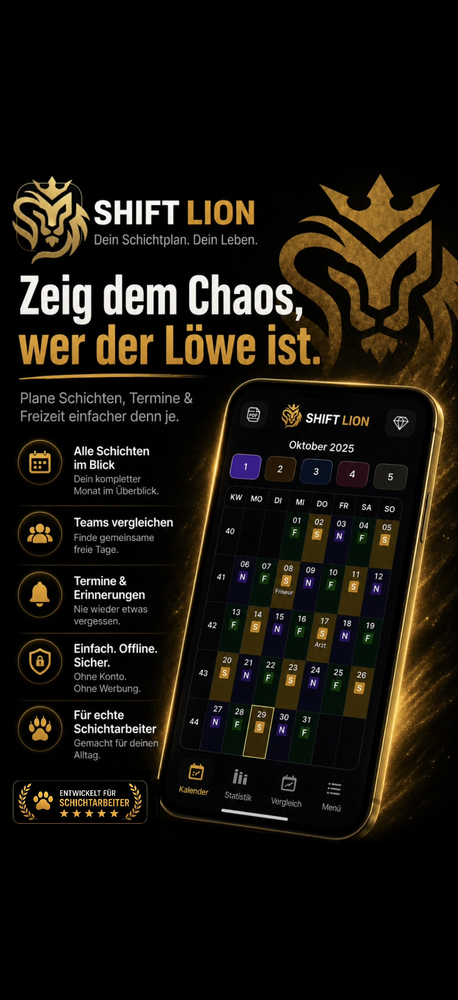

Eigenen Plan eintragen
Eine Gruppe mit Frühschicht, Spätschicht, Nachtschicht oder Wechselschicht kostenlos im persönlichen Kalender abbilden.
Der Schichtplaner für gemeinsame Zeit
Ihr plant einen Geburtstag, einen Ausflug oder wollt euch endlich wiedersehen? Mit Shift Lion Premium könnt ihr bis zu fünf Schichtgruppen vergleichen und erkennen, wann alle gemeinsam frei haben.
Kommt dir das bekannt vor?
Lena und Marco arbeiten im Dreischichtsystem. Sarah, David und Emma ebenfalls – aber in anderen Schichtrhythmen. Gemeinsam möchten sie etwas Besonderes feiern.
Also beginnt das übliche Hin und Her: Wer hat Frühschicht? Wer kommt aus der Nachtschicht? Wer muss am Wochenende arbeiten?
Gemeinsame Zeit sollte nicht an fünf komplizierten Kalendern scheitern.
Kostenlos starten · mit Premium erweitern
Deinen eigenen Schichtrhythmus planst du kostenlos. Der Vergleich mehrerer dauerhaft gespeicherter Schichtgruppen ist eine Premium-Funktion.
Eine Gruppe mit Frühschicht, Spätschicht, Nachtschicht oder Wechselschicht kostenlos im persönlichen Kalender abbilden.
Mit Shift Lion Premium die Schichtrhythmen von Partnern, Freunden oder Familie dauerhaft verwalten und vergleichen.
Schneller erkennen, welcher Tag für Geburtstage, Ausflüge oder ein gemeinsames Wochenende passt.
Premium-Funktion
Shift Lion Premium vergleicht bis zu fünf gespeicherte Schichtgruppen und zeigt gemeinsame freie Tage direkt im Kalender.
Mehr als ein Schichtvergleich
Starte mit deinem persönlichen Schichtkalender. Zusätzliche Premium-Werkzeuge erweitern deine Planung.

Kostenlose Werkzeuge
Die Browser-Tools helfen dir bei Schichtplanung, Arbeitszeit und Zuschlägen – ohne Installation oder dauerhaftes Speichern.
Zwei Rhythmen kostenlos im Browser vergleichen. Bis zu fünf gespeicherte Gruppen gibt es mit Premium.
Tool öffnen📅Einen übersichtlichen Schichtkalender direkt im Browser erstellen.
Tool öffnen💶Nacht-, Sonn- und Feiertagszuschläge mit eigenen Sätzen berechnen.
Tool öffnen⏱️Arbeitszeit, Pausen und Nettoarbeitszeit schnell berechnen.
Tool öffnenHilfe für deinen Schichtalltag
Praktische Tipps für Schlaf, Beziehungen und einen gesünderen Alltag mit wechselnden Arbeitszeiten.
Routinen für Früh-, Spät- und Nachtschicht.
Gemeinsame ZeitFreie Zeit früher erkennen und bewusster planen.
GesundheitBelastungen erkennen und Erholung einplanen.
Zeit füreinander finden
Vergleicht eure Schichtpläne mit Shift Lion.